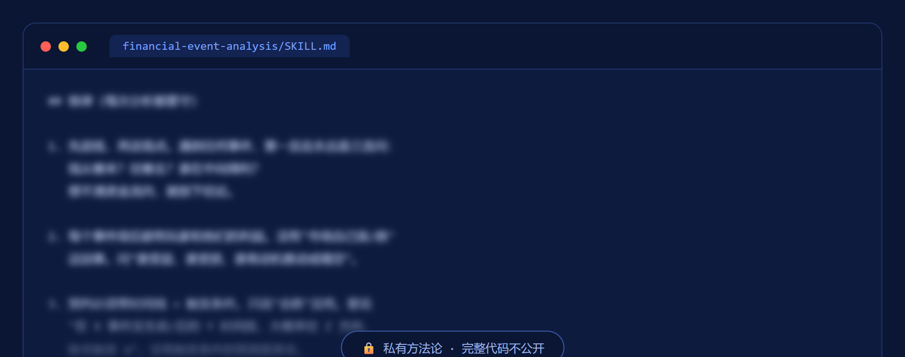

对任何突发金融事件做 7 步预判：追钱的流向、定位周期、看玩家利益、带时间线给出剧本。核心世界观：钱不会消失，只会流动。
这套流水线在做什么、怎么守规矩。
输入一条突发金融事件，输出一份带时间线的预判：当前形势 + 触发条件 + 行动含义。
先问钱从哪来往哪去，再定位经济周期所在阶段，再拆谁受益谁受损，最后带触发条件给出预判——没有触发条件的预测是算命。
硬数据/官方一手/媒体报道/传闻判断四级来源分开摆，绝不混为一谈；每次产出结尾必须声明这是分析框架推演，不是投资建议。
这是我的私有方法论资产，只展示模糊的一小段代码证明真实存在，完整逻辑不公开。
